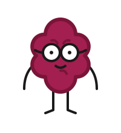

404
Jejda, zakutálená malina!
Vypadá to, že stránka, kterou hledáte, spadla někam pod stůl. Nic se ale neděje, pojďme vás vrátit bezpečně zpátky.

Vypadá to, že stránka, kterou hledáte, spadla někam pod stůl. Nic se ale neděje, pojďme vás vrátit bezpečně zpátky.